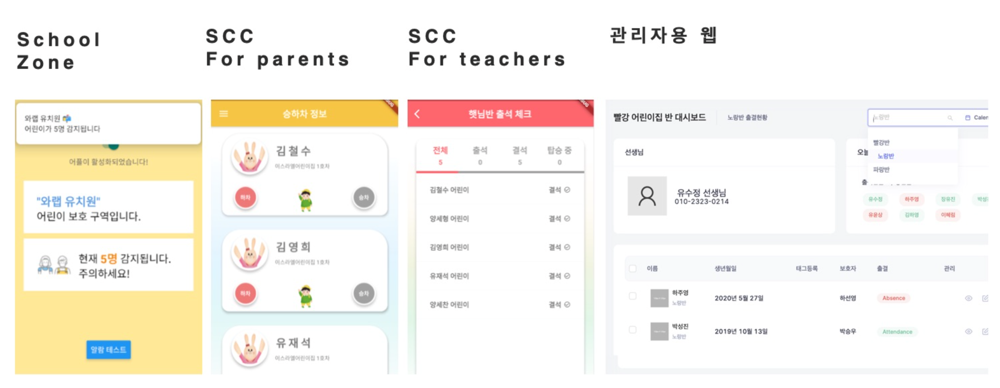
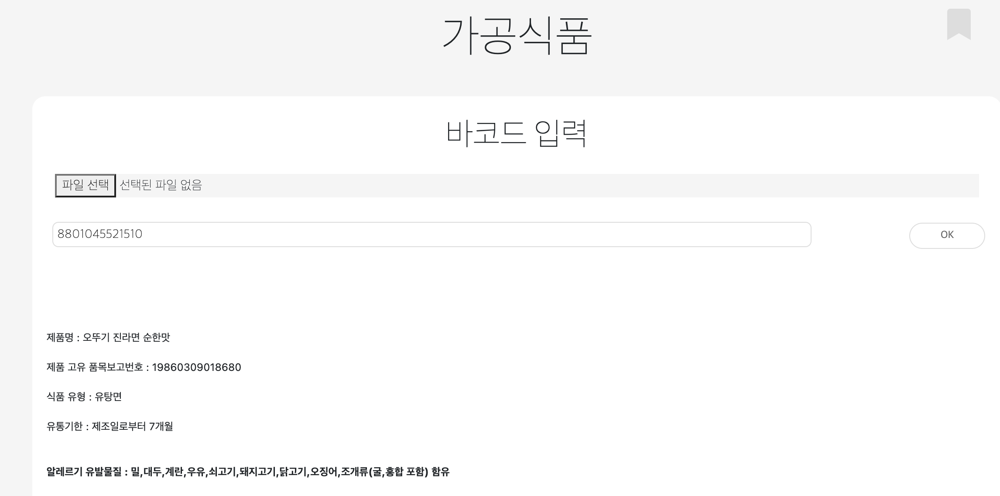
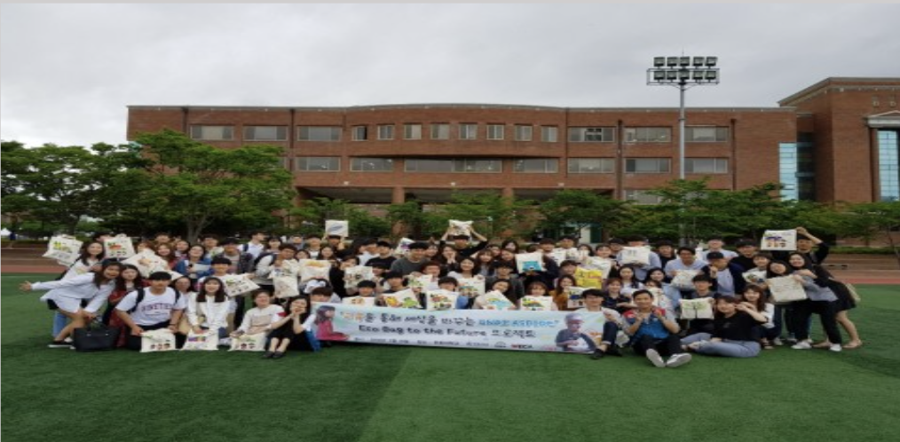

아이택시
한동인들의 No.1 교통 어플리케이션입니다.
교통에 어려움을 겪는 한동대 학생들을 위해 택시, ktx 동반석 모집을 제공합니다.
이 프로젝트 전에는 앱을 제대로 만들어 본 적이 없었습니다. I-Taxi를 통해 앱에 대한 흥미를 갖게 되었습니다.
앱스토어에서 다운받기
개발기간: 2022.07 ~ 10 / 구성원 : 6명
담당업무: 프로젝트 기획, 백엔드
개발스택: Flutter, Firebase, AWS, Java Spring boot

무선태그를 활용한 어린이 통학, 야외활동 안전 지원 서비스
비콘(Beacon)이라는 무선태그와 수신기 간의 통신을 통해 발생하는 로그를 기반으로
어린이 통학차량 내 방치사고 예방 앱 SCC, 스쿨존 내 교통사고 예방 방지를 위한 School Zone 앱,
그리고 이 두 서비스를 통합하여 관리하고 모니터링 할 수 있는 관리자웹을 개발하는 프로젝트입니다.
개발기간: 2022.07 ~ 10 / 구성원 : 2명
담당업무: 프로젝트 기획, 프론트엔드, 백엔드
개발스택: React, React Native, Flutter, Spring, Firebase, Mysql

모두를 위한 식품 성분 알리미 HI, YOU
채식주의자, 식품 알레르기 환자, 시각장애인 '모두를 위한' HI,YOU는
가공식품, 식품, 농축산물 및 수산물에 대한 성분 및 영양 정보를 제공해주는 서비스입니다.
개발기간: 2021.09 ~ 12 / 구성원 : 3명
담당업무: 프로젝트 기획, 데이터 전처리 및 DB 구축, 백엔드
개발스택: 회사 자체 프로그램(AppDev), CSS, javascript, R, Firebase, 공공데이터

세계교육문화원 WECA와 함께하는 기적의 프로젝트
6월 4일 세계 침략 희생 아동의 날을 맞아 세계교육문화원 WECA와 프로젝트 기획하여 운영했습니다.
세계 침략 희생 아동들의 현황과 트라우마에 대해 배우고,
아동들에게 보내질 에코백과 학용품을 꾸며서 실제로 우간다의 난민 아동들에게 전달하는 프로젝트입니다.
프로젝트기간: 2018.4 ~ 7
담당업무: 프로젝트 기획 및 운영